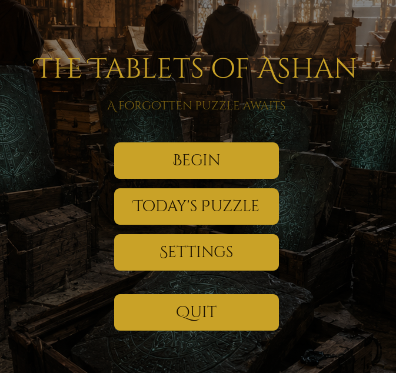
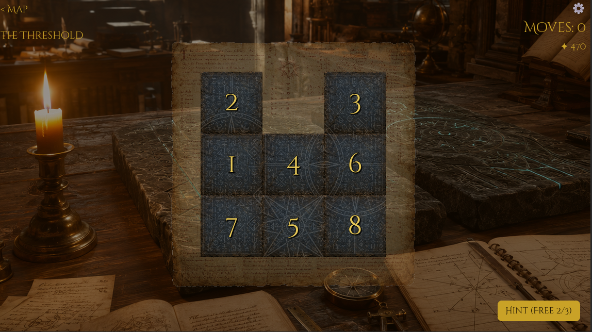
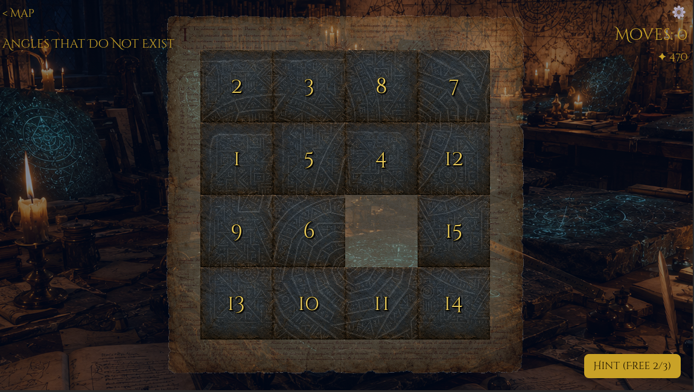
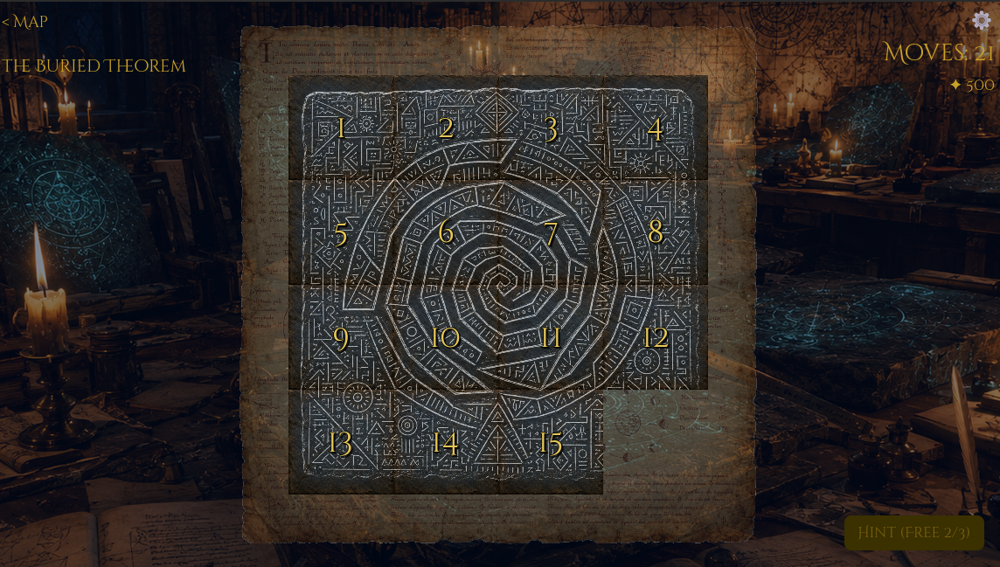

Scroll to discover
The Story
In the year of our Lord 1247, eighteen crates arrived at the monastery of Sant'Anselmo di Verdamacht, sealed with black wax. Brother Sybelius was tasked with cataloguing their contents.
One hundred and eleven stone tablets, covered in signs belonging to no known alphabet. Sybelius began his work with a tranquil spirit.
He should have left them sealed.
"I have lost count of the days. My notebook records dates that do not correspond to those of the cloister calendar. One of the two is wrong. I prefer not to know which."
As you reassemble each tablet, a fragment of his diary is revealed. One hundred and eleven puzzles. One hundred and eleven confessions.

Gallery

Chapter I — The Tablets
Chapter V — The Abyss
Stars and secretsFeatures
Six chapters of increasing darkness, from the ordered calm of the scriptorium to the geometric impossibility of the Abyss.
Each solved puzzle unlocks a fragment of Brother Sybelius's diary. Read as you play. Dread as you read.
Each chapter reveals a different cosmic symbol across the tablet fragments. Reassemble the pieces. Reveal what should not be seen.
A new enigma every day, free for all. A reason to return. A ritual Sybelius himself could not escape.
Full Italian, English, and Spanish localisation — including all 111 diary fragments, translated with care.
Original haunted music, ambient soundscapes, and a visual design that deepens as Sybelius's grip on reality loosens.
From the Diary of Brother Sybelius — Level 111
"The last tablet is in its place. The order is complete. Ashan is"
Percy Studio
Free to play. The first two chapters await anyone willing to look. The rest — for those who must know how it ends.
Get notified Privacy policy